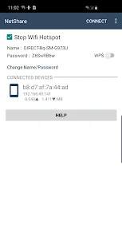

NetShare 为什么不走原生热点？一套 WiFi Direct + HTTP 代理的技术取舍
Android 原生热点有 root 门槛和厂商锁，NetShare 绕路用 WiFi Direct 建 P2P Group 再用 HTTP 代理转发，这条看似多余的链路背后藏着精细的兼容性权衡。
你有没有想过一个问题：Android 不是自带"便携式热点"吗，为什么还需要 NetShare 这样的应用？原生热点一键开启，看起来比 WiFi Direct 配置代理这套流程方便多了。但用过 NetShare 的人都知道——它能用的场景，原生热点根本顶不上。
我特意对比过两套方案的底层实现，才发现 NetShare 选择 WiFi Direct + HTTP 代理这条看似"绕路"的链路，根本不是技术能力的限制，而是一组精准的兼容性取舍。
问题：原生热点卡在哪里
先说原生热点的问题。Android 的便携式热点 API（WifiManager.setWifiApEnabled）从 Gingerbread 就存在了，但它有三个硬伤：
第一，权限门槛。从 Android 6.0 开始，某些厂商 ROM（小米、华为、OPPO）把热点开关绑定到了"系统应用"权限——第三方 App 直接调用会被静默拒绝。root 手机当然能绕过，但 root 本身就是大多数用户的门槛。
第二，行为不一致。不同 Android 版本、不同厂商对热点的实现细节天差地别：有的机型热点开启后会自动关闭 WiFi（你只能用蜂窝数据分享），有的机型允许 WiFi 中继但需要额外 adb 命令开启，还有的机型热点启动后 WifiInfo 的 SSID 和 IP 根本读不出来。
第三，无法分享 VPN 流量。这可能是 NetShare 最核心的竞争力。原生热点走的是系统路由表，VPN 流量走的是 tun0 虚拟网卡，两条路径互不相交——原生热点根本碰不到 VPN 加密后的流量。NetShare 则完全绕开了系统路由，在用户态自己做转发。
这三个问题叠加起来，就出现了一个场景缺口：非 root 手机 → 分享 VPN 流量 → 多设备同时用。这个缺口就是 NetShare 的生存空间。
拆解：WiFi Direct + HTTP 代理的架构
那 NetShare 是怎么绕过去的？它的方案可以拆成三层：P2P Group 建网、HTTP 代理转发、固定 IP 约定。
第一层：用 WiFi Direct 建网，伪装成原生热点的体验
WiFi Direct（WifiP2pManager）是 Android 4.0 引入的 P2P 直连协议。NetShare 通过它创建一个 P2P Group，让自己成为 Group Owner（GO）。从接收端设备的角度看，这个 P2P Group 和普通 WiFi 热点几乎没有区别——它会出现在 WiFi 扫描列表里，需要输入 WPA2 密码才能连接。
但这里有一个关键不同：WiFi Direct 不需要手机的蜂窝数据或 WiFi 连接状态来维持。原生热点在某些机型上会强制关闭 WiFi 连接（"手机只能二选一"），而 NetShare 的 P2P Group 可以和 WiFi 连接共存——这就是它能做 WiFi 中继模式的根本原因。
第二层：HTTP 代理做流量转发，绕开系统路由
P2P Group 建好之后，NetShare 在手机上启动一个 HTTP 代理服务器，监听固定端口 8282。所有进入 P2P 网络的设备，流量先到这个代理，再由代理转发到手机自己的出口（蜂窝数据、WiFi 或者 VPN）。
这个设计的精妙之处在于：HTTP 代理可以在 Android 的系统 WiFi 设置里直接配置。用户选中 P2P 热点之后，在"修改网络"里找到"代理"选项，填 192.168.49.1 和 8282 就行——不需要 root，从官方下载装一个就行，不需要第三方客户端，不需要 adb 命令。
为什么不是 SOCKS 代理？因为 SOCKS 代理在 Android 系统层面没有入口——你要么 root 配全局代理，要么每个 App 单独设。HTTP 代理虽然只能覆盖 HTTP/HTTPS 流量，但 HTTPS 可以通过 CONNECT 隧道转发，实际覆盖了绝大多数日常场景。
第三层：固定 IP 192.168.49.1，不是巧合
如果你用过 NetShare，肯定注意到代理地址永远是 192.168.49.1——不是用户可配置的，也不是动态分配的。这不是 NetShare 写死了什么魔法数字，而是 Android WiFi Direct 框架本身的约定：Group Owner 在 P2P Group 里的 IP 地址就是 192.168.49.1。
这个固定约定带来了巨大的便利：接收端不需要先扫描网络发现代理服务器在哪里，看 NetShare 主界面底部的 Proxy Host 直接抄就行。甚至 NetShare 自己也不需要做 IP 发现——它直接读 WifiP2pInfo.groupOwnerAddress，拿到的就是 .1。

取舍：这套设计的代价
看起来很优雅，但这套方案不是银弹。它有几个必须接受的代价，我在实际使用中都踩过坑。
代理转发的性能损耗
HTTP 代理转发本身有开销。根据NetShare文档里的实测数据，代理层额外吃掉 15-25% 的带宽——这还没算 P2P Group 本身的 5-10% 损耗。如果你的手机直接测速能到 100Mbps，走 NetShare 之后大概是 70-85Mbps，这个比例是正常的。
更夸张的是双重加密场景：如果手机本身开着 VPN，再用 NetShare 分享，那就是 VPN 加密一层 + HTTP 代理转发一层，总损耗能到 30-50%。我用 WireGuard + NetShare 测过一次，手机直接测速 50Mbps，NetShare 之后只剩 22Mbps——基本砍了一半。
WiFi 中继模式的物理限制
WiFi 中继模式（手机既连 WiFi 又开 P2P Group）看起来很爽，但它有 30-40% 的额外损耗。原因很简单：手机的 WiFi 模块在同一频段上要同时做接收（连路由器）和发射（给 P2P 设备），物理上不可能全速双工。这个损耗是硬件决定的，软件优化无能为力。
我用 Redmi Note 8 做过中继测试：原始 WiFi 测速 45Mbps，中继之后只有 18Mbps，刚好是 40% 的水平。
频段拥塞的脆弱性
WiFi Direct 默认用 2.4GHz 频段，这个频段现在拥挤得离谱——微波炉、蓝牙、无线鼠标、邻居的路由器全在上面。NetShare 文档里提到，2.4GHz 拥塞时速度能掉 20-50%，而且你完全没法控制周围的环境干扰。
判断：适合什么场景，不适合什么
说了这么多代价，那 NetShare 到底值不值得用？我给它划了一条明确的适用边界。
适合的场景：
- 分享 VPN 流量给多设备：这是 NetShare官网 主打的杀手级用途。原生热点碰不到 VPN 的 tun0 流量，但 NetShare 在用户态自己转发，天然支持。我出差时经常用它把机场 VPN 分享给 MacBook 和 iPad，比每台设备单独配机场省心多了。
- 非 root 手机需要临时分享：不想 root 但又需要把手机网络分出去，NetShare 是最干净的选择——不需要改系统设置，不需要 adb。
- WiFi 中继临时救场：酒店 WiFi 信号只在窗边好，把闲置手机放窗边连 WiFi，开 NetShare 当中继器，全房间都能用。虽然速度打折但胜在够用。
不适合的场景：
- 追求极致速度：如果你需要跑满 5G 的 200Mbps+，NetShare 的代理损耗会让你抓狂。直接用原生热点（或 root 开 nat 转发）才是正道。
- 需要 SOCKS 代理的应用：某些应用（比如游戏加速器、特定下载工具）只认 SOCKS 代理，HTTP 代理覆盖不了。这种情况只能 root 或者用专门的 VPN 客户端分享方案。
- 长时间高负载运行：HTTP 代理转发会让手机 CPU 持续工作，发热降频是迟早的事。文档里建议接充电器 + 电池优化设为无限制，但我还是遇到过连续运行 4 小时后速度骤降的情况。

写在最后
NetShare 这套方案让我想起软件工程里的一个经典原则：先约束，再选择。它没有试图覆盖所有热点场景，而是瞄准了"非 root + 分享 VPN + 多设备"这个被原生方案放弃的缺口，用 WiFi Direct + HTTP 代理这套看起来"不够直接"的组合拳精准命中。
代价是有的——损耗、发热、频段限制——但这些代价在目标场景下是可接受的。毕竟，能用和好用是两回事，而 NetShare 先解决了"能用"的问题，再在"好用"的边界上做了诚实的取舍。